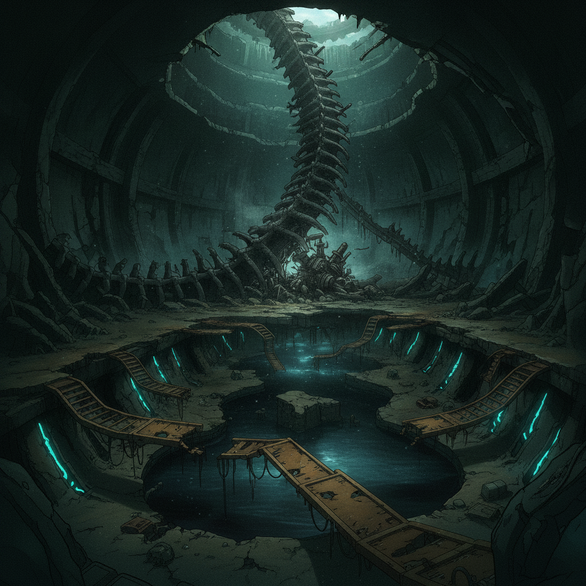
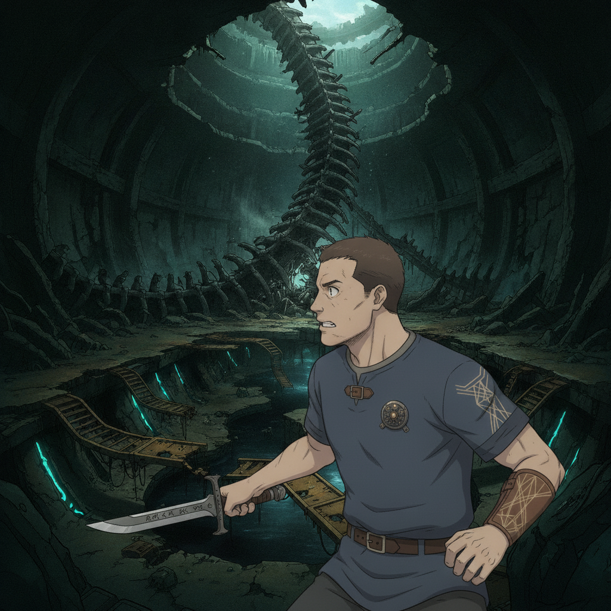
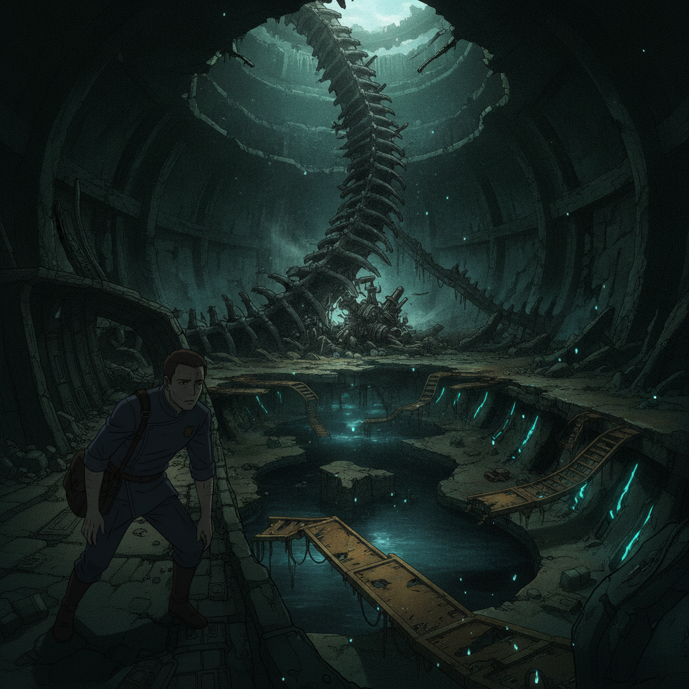
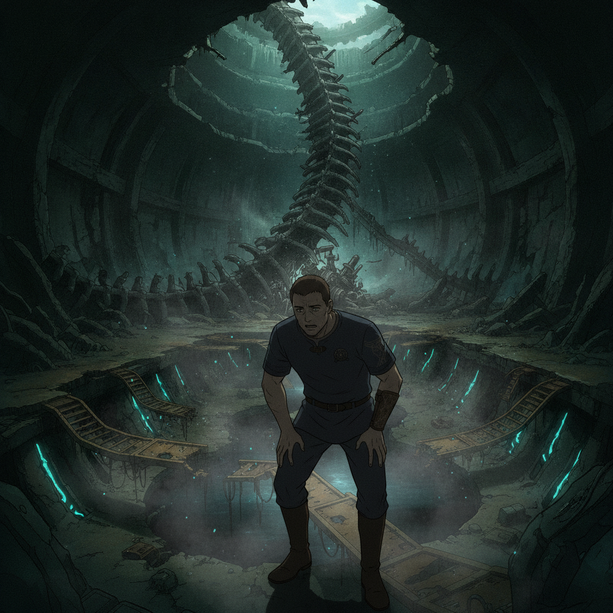

The ruins interior is a maze of buckled service tunnels. The hum of the failed weave is unnervingly present. Then the silence breaks — shouts, the clash of metal on stone. We are ambushed.

Gideon Marsh“Assayers! How did they—?”
The test has turned deadly.

I shadow Wren, who saw them before anyone — not students, but the precise, methodical hunt of Grey Hand Assayers. She knows these ruins better than any map, and a smugglers' bolt-hole stands open where there should be only stone. Without her, none of us get out.

We emerge, battered but victorious. The air tastes of ozone and fear.